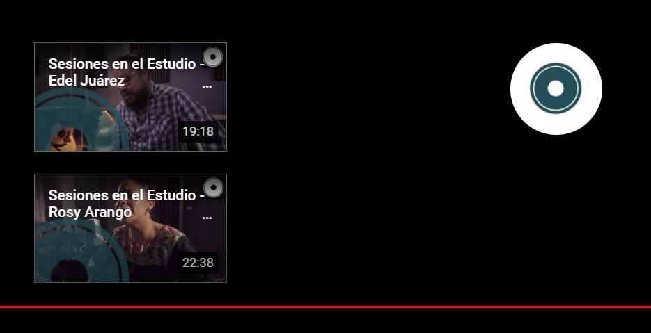
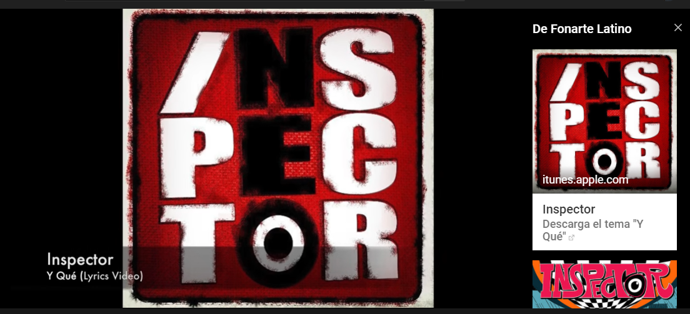
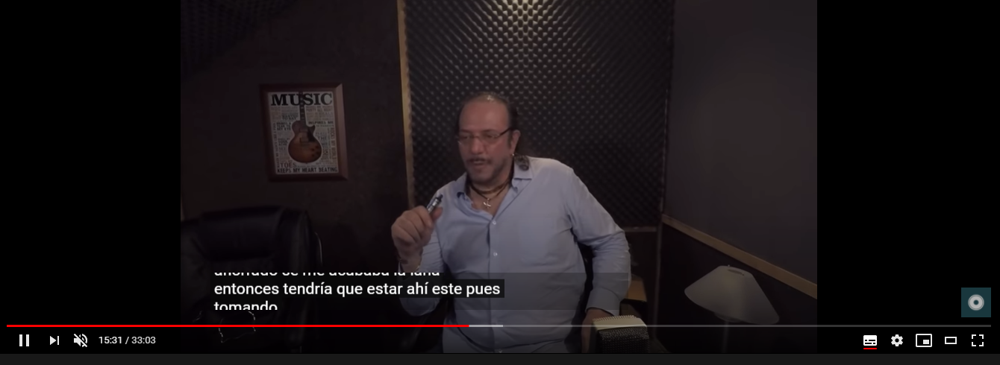
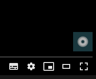
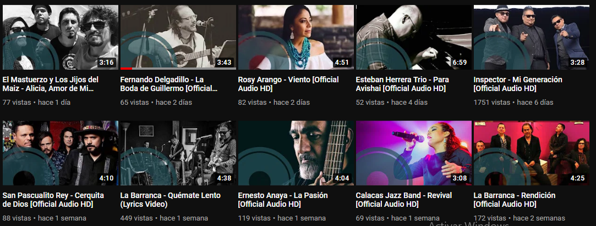

YOUTUBE BEST PRACTICES 2020
Traducido por: Allan Ibarra | Fecha : 11/Agosto/2020Herramientas del Video
Pantallas Finales
Las pantallas finales son una característica importante que ayuda a seleccionar y alargar la sesión de visualización de un espectador. Para lograr que el espectador haga clic en el siguiente video o lista de reproducción, se recomienda agregar al menos 7-10 segundos de tiempo de pantalla negra al final de cada video. Puede añadir hasta cuatro elementos diferentes, recomendamos utilizar al menos tres en cada video, con uno de ellos como una lista de reproducción y otro siendo el botón de suscripción. Asegúrese de mantener sus elementos actualizados para impulsar los lanzamientos relevantes o prioritarios.
Tarjetas
El botón de la tarjeta que se muestra como "i" en la esquina superior derecha a lo largo del video, es donde se puede vincular a sitios (merchandising, streaming, sitios de donación, entradas para giras, listas de reproducción, etc.) así como promocionar videos relevantes o incluso invitar a que el espectador se suscriba, con esto los espectadores puedan realizar "la llamada a la acción" sin detener la reproducción del video.
Subtítulos
Habilitar subtítulos (CC) o traducción a todos los videos, es una forma beneficiosa de difundir tu música y videos a los espectadores que no necesariamente hablan tu idioma o para las personas a las que les gustaría tener la letra automáticamente en la pantalla. La traducción también se puede automatizar para título y descripción, que se encuentran en la pestaña Subtítulos. Para habilitar esta característica en el administrador de videos, seleccione el video al que desea agregar subtítulos y seleccione "editar". Luego haga clic en la pestaña "Subtítulos / CC" y "agregar nuevo".
Branding
Es un logo que, cuando se desplaza, permite al usuario suscribirse al canal sin dejar la reproducción su video. Es otra función para agregar de la sesión de visualización que se colocara en la esquina inferior derecha de cada video como marca de agua. Para habilitar esta función en Creator Studio, seleccione channel / branding y, luego, "agregar una marca de agua".
Optimización de Miniatura
Las miniaturas deben ser coloridas y fáciles de ver (no oscuras ni borrosas), con una imagen clara del artista o una imagen llamativa de la marca para captar la atención de potenciales fans. Ninguna miniatura debe verse idéntica ni demasiado similar, para poder evitar confundir al espectador.
